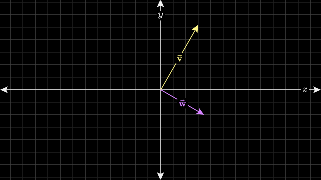
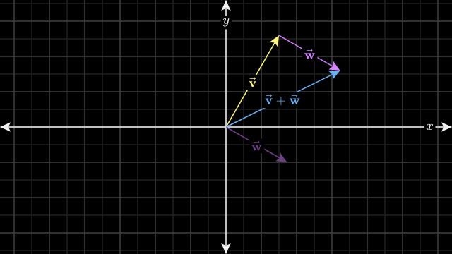
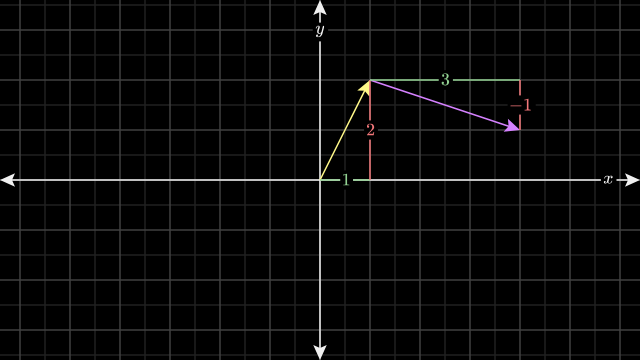
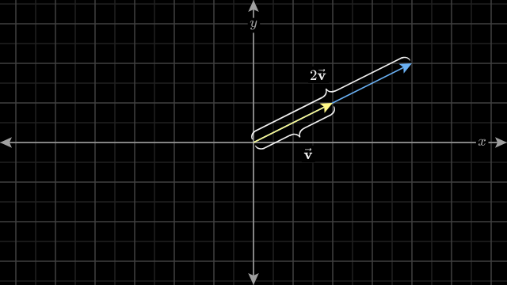

(b) Basic vector operations
1. 덧셈 & 뺄셈
벡터의 궤적을 따라 움직이는 것이다.
$\vec{v}+\vec{w}$는 벡터 $\vec{v}$의 궤적으로 움직인 다음, 벡터 $\vec{w}$의 궤적으로 움직이는 것이다.


이를 리스트(숫자의 나열)로 표현하면, 다음과 같다.
$$ \vec{v}+\vec{w} =\left[\begin{matrix} v_1 \\ v_2 \end{matrix}\right]+ \left[\begin{matrix} w_1 \\ w_2 \end{matrix}\right] =\left[\begin{matrix} v_1+w_1 \\ v_2+w_2 \end{matrix}\right] $$
2. Scaling

이를 리스트(숫자의 나열)로 표현하면, 다음과 같다.
$$ a\vec{v} =a\left[\begin{matrix} v_1 \\ v_2 \end{matrix}\right] =\left[\begin{matrix} av_1 \\ av_2 \end{matrix}\right] $$